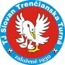
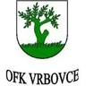
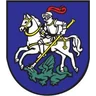

Tabuľky
Ročník 2026/27, poradie podľa Sportnetu.
VI. liga Západ
A-mužstvo
| # | Tím | Z | V | R | P | Skóre | B |
|---|---|---|---|---|---|---|---|
| 1 | 14 | 11 | 2 | 1 | 48:18 | 35 | |
| 2 | 14 | 9 | 1 | 4 | 37:21 | 28 | |
| 3 | 14 | 8 | 3 | 3 | 46:28 | 27 | |
| 4 | 14 | 8 | 2 | 4 | 31:22 | 26 | |
| 5 | 14 | 8 | 2 | 4 | 24:14 | 26 | |
| 6 | 14 | 8 | 1 | 5 | 41:28 | 25 | |
| 7 | 14 | 7 | 3 | 4 | 28:26 | 24 | |
| 8 | 14 | 6 | 3 | 5 | 24:22 | 21 | |
| 9 | 14 | 4 | 5 | 5 | 22:28 | 17 | |
| 10 | 14 | 5 | 1 | 8 | 20:32 | 16 | |
| 11 | 14 | 5 | 1 | 8 | 29:31 | 16 | |
| 12 | 14 | 4 | 2 | 8 | 26:51 | 14 | |
| 13 | 14 | 4 | 1 | 9 | 22:33 | 13 | |
| 14 | 14 | 2 | 1 | 11 | 16:39 | 7 | |
| 15 | 14 | 2 | 0 | 12 | 14:35 | 6 |
V. liga starších dorastencov U19
Starší dorast U19
| # | Tím | Z | V | R | P | Skóre | B |
|---|---|---|---|---|---|---|---|
| 1 | 12 | 11 | 1 | 0 | 54:12 | 34 | |
| 2 | 12 | 8 | 2 | 2 | 53:22 | 26 | |
| 3 | 12 | 7 | 2 | 3 | 27:19 | 23 | |
| 4 | 12 | 6 | 3 | 3 | 15:14 | 21 | |
| 5 | 12 | 7 | 0 | 5 | 40:26 | 21 | |
| 6 | 12 | 6 | 1 | 5 | 32:33 | 19 | |
| 7 | TJ Inovec Trenčianske Jastrabie | 12 | 5 | 3 | 4 | 31:24 | 18 |
| 8 | 12 | 4 | 2 | 6 | 26:28 | 14 | |
| 9 | 12 | 3 | 2 | 7 | 22:38 | 11 | |
| 10 | 12 | 3 | 1 | 8 | 17:38 | 10 | |
| 11 |  TJ Slovan Trenčianska Turná | 12 | 2 | 3 | 7 | 21:44 | 9 |
| 12 | 12 | 2 | 2 | 8 | 13:34 | 8 | |
| 13 | 12 | 2 | 2 | 8 | 16:35 | 8 | |
| 14 | 0 | 0 | 0 | 0 | 0:0 | 0 |
IV. liga starších žiakov U15
Starší žiaci U15
| # | Tím | Z | V | R | P | Skóre | B |
|---|---|---|---|---|---|---|---|
| 1 | 12 | 12 | 0 | 0 | 78:11 | 36 | |
| 2 |  OFK Vrbovce | 12 | 10 | 0 | 2 | 72:30 | 30 |
| 3 | 12 | 7 | 0 | 5 | 38:29 | 21 | |
| 4 | 11 | 5 | 1 | 5 | 30:34 | 16 | |
| 5 | 11 | 4 | 1 | 6 | 46:57 | 13 | |
| 6 |  OŠK Podolie | 11 | 4 | 1 | 6 | 35:56 | 13 |
| 7 | 12 | 3 | 1 | 8 | 12:55 | 10 | |
| 8 | 11 | 3 | 0 | 8 | 26:38 | 9 | |
| 9 | 12 | 1 | 2 | 9 | 28:55 | 5 |